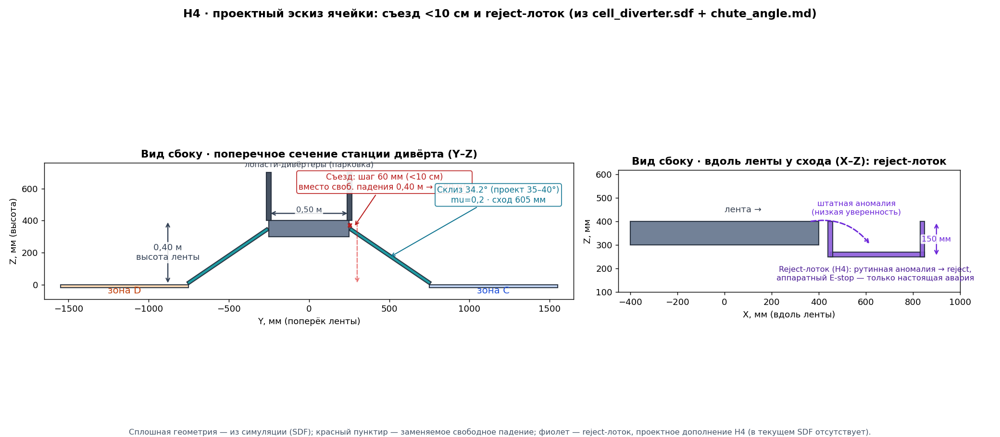

Машина, которая видит форму, а не картинку
Depth-камера над лентой 1 м/с. Ни одного пикселя цвета: решение B / C / D считается по геометрии глубины — и тут же исполняется шибером.
Иван Пушкин · Иван Резников · Максим Седов · Михаил Анцев · Владимир Зайцев
Единый контур, а не два компонента
без остановок
RGB не читается
коэффициент K
габариты → форма
до входа товара
возврат механизма
Ошибка на любом звене обесценивает всё решение, поэтому контур замкнут целиком в Gazebo: ROS 2 Humble + Fortress. Ядро перцепции и классификации при этом тестируется отдельно от ROS, а и механизм, и число камер — это сменный мир и одна переменная окружения, а не ветка кода: стойка деградирует к верхней головке бит-в-бит, если боковые молчат. Роли головок асимметричны: верхняя владеет следом и K, боковая добавляет только скрытую высоту — и только когда прибавка выше её собственного разрешения.
Границы модулей — типизированные контракты
УзлыСвязаны сообщениями, не словарями
- perception → classifier → controller — типизированные ROS 2 сообщения: контракт виден из текста, а не возникает в рантайме
- Ядро перцепции и классификации тестируется отдельно от ROS 2 — логика проверяема без симулятора
- Механизм и число камер — сменный мир плюс переменная окружения, а не ветка кода
СтекРазвернётся на вашем стенде
- Python 3.11 · ROS 2 Humble · Gazebo Fortress — из разрешённого списка
- Классический CV, без нейросети: усложнение обязано побить бейзлайн числом, а бить нечего — правило уже даёт 33/33
- Одна команда: чистый checkout → пиннутый Docker → headless e2e на CPU
Сначала габариты, потом форма
или больше 450×320×320 мм
→ зона негабарита
строго больше порога
→ зона доупаковки
→ основной сортировщик
Камеру проверяет сам меш
Сверка «меш ↔ камера» идёт поячеечно, поэтому расхождение видно как конкретная ячейка, а не как средняя ошибка по датасету.
Шибер, а не толкатель
ВыборДоказан числом, а не вкусом
- Товар уходит со скоростью ленты — нет бокового удара 2,5 м/с
- На тяжёлом коробе шибер ≥1,3× мягче по пиковому ускорению, точечно до 3×
- Движущаяся лента сама сводит товар вдоль стенки к кромке
ЦиклИдёт от сигнала до возврата
- Сигнал классификатора → формирование стенки за 0,5 с до входа
- Смена зоны требует расчётных 3,1 м «воздуха» — планировщик отвергает опасный поток до старта
- Склиз → зона → возврат; E-stop с восстановлением, разделение зон
От точки A в три потока

Как это работает вживую
полные записи прогонов — в Nextcloud организаторов
Честные цифры, одна команда на каждую
под шумом 3 мм — 32/33
2 камеры, 30.07 · terminal FAIL 0
RTF 0.44 · 19 шт/мин в sim-времени
общий sim-clock
величины из первых принципов
исполнение 4 обосновано сведением
Отказ должен быть громким
ОтказыПредусмотрены штатно
- E-stop с восстановлением: остановка по сигналу, возврат механизма, продолжение потока — регрессия пройдена
- Планировщик отвергает опасный поток до старта: смена зоны требует 3,1 м «воздуха»
- Боковая головка молчит → верхняя ведёт вердикт бит в бит, без переключения кода
ЛовимВсё, что не сходится
- Значение вне физического диапазона — явный отказ, а не тихо неверный ответ
- У порога действует консервативная политика: спорное идёт в C/D, а не в B — затор в основном сортировщике дороже
- Свой же дефект, найденный мульти-seed: слияние поднимало 9 мм Ручки до 11 и выводило из-под габаритного правила. Закрыт порогом = разрешение боковой головки
Что мы знаем про свои границы
ГраницыНазваны прямо
- 9 шт/мин — заявка отгружаемой стойки. Пиковые 18 за неё не выдаём
- Плотный same-zone поток деградирует: эпизод из шести даёт 2/6. Классификация верна, ошибается исполнительная часть. Причину не нашли
- Физика — инженерные допущения: ODE-трение, rigid-body; ткань и привод не моделируются
- Физический прототип — осознанный NO-GO: постановка допускает ПАК в симуляции
ДальшеТри ближайших шага
- DOE по физике перед изготовлением — развести допущения и реальность до металла
- Склиз и рампа для мягкости приземления в зоне
- Поток «не уверен» на низкой confidence — отдельная ветка вместо тихо неверного ответа
Будем рады ответить на ваши вопросы
Иван Пушкин · Иван Резников · Максим Седов · Михаил Анцев · Владимир Зайцев